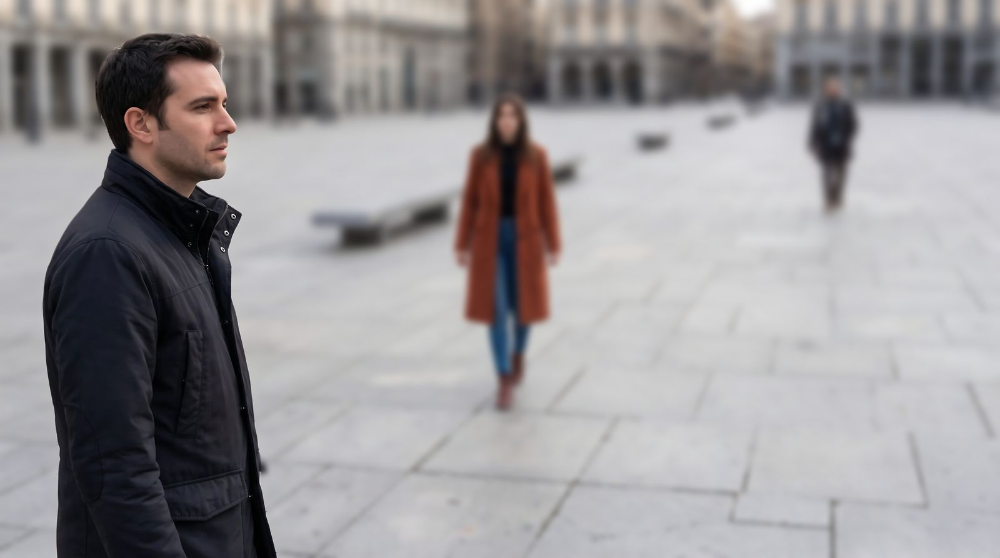
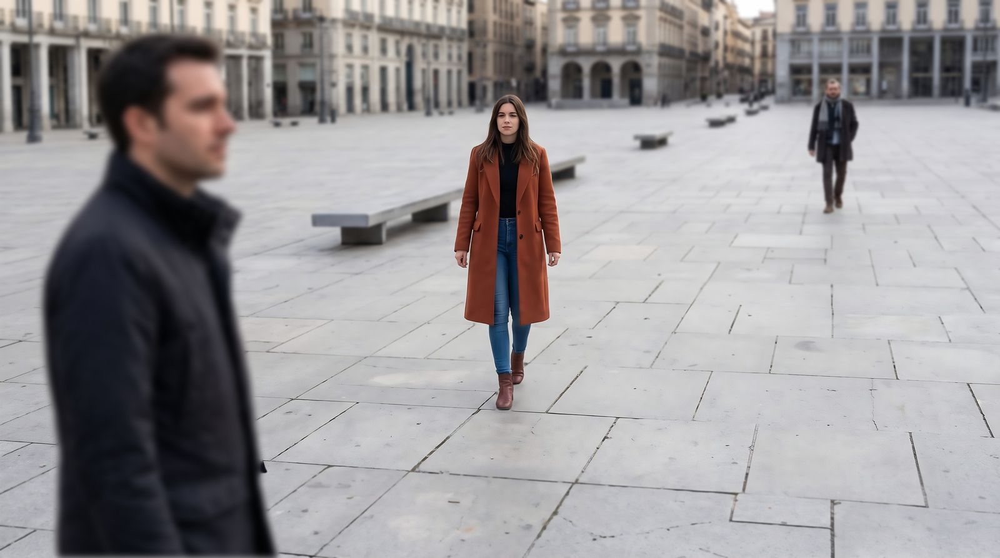

SimuladorFoto
Una plaza, tres personas a 1, 3 y 10 metros y una cámara en tu móvil. Mueve la velocidad, el diafragma y el ISO y mira al momento qué le pasa a la foto.
Descargar para AndroidLa última versión. Funciona en Android 12 o superior y ocupa unos 20 MB.
Es gratis y no viene de Google Play: así se instala.


Lo que controlas
Cada ajuste cambia la foto en directo, con la exposición correcta de referencia en 1/125 s, f/5,6 e ISO 100.
- Velocidad
- Si es más lenta que 1/focal, la foto sale movida por el pulso. Con el trípode puesto, no.
- Diafragma
- Ábrelo o ciérralo y mira cuánto se desenfoca cada persona según su distancia.
- ISO
- Al subirlo, la foto se aclara y aparece el grano.
- Objetivo
- Zoom de 24 a 200 mm con botones o pellizcando la foto, y puedes guardar tus focales favoritas.
- Enfoque
- Toca a una persona o el suelo y ese punto queda nítido.
- Exposición
- En la esquina ves cuántos pasos te pasas o te quedas corto. Tócala y aparece el histograma.
Cuestionarios para practicar
Mil preguntas en siete temas: pasos de exposición, exposiciones equivalentes, corregir la exposición, velocidad y movimiento, diafragma y profundidad de campo, ISO y ruido, y situaciones reales, como sacar el agua de una cascada con efecto seda.
Cada respuesta trae su explicación, y la app recuerda qué preguntas ya has visto y cuántas aciertas por tema.
Cómo instalarla
- Desde el móvil, pulsa Descargar para Android. Se baja el archivo simulador-foto.apk.
- Ábrelo desde el aviso de descarga completada o desde la carpeta Descargas.
- Si el móvil dice que no puede instalar apps de este origen, entra en Ajustes desde el aviso, activa Permitir de esta fuente y vuelve atrás.
- Pulsa Instalar. Si Play Protect pide confirmación porque la app no viene de Google Play, elige Instalar de todos modos.